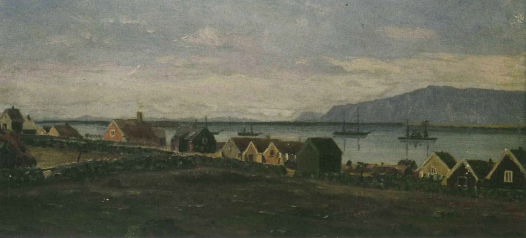
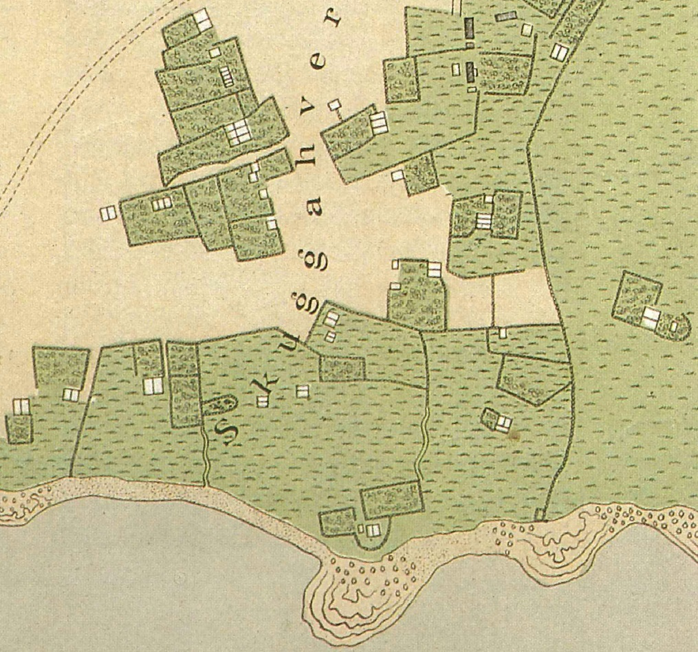

Skuggahverfi
Málverk Jóns Helgasonar biskups af bæjum í Skuggahverfinu. Bæirnir
sem sjást eru norðan við þar sem Hverfisgata liggur í dag. Líklega
eru þetta Steinsstaðir, Veghús, Móakot og Miðhús sem sjást á
myndinni.
Skuggahverfið er nefnt eftir torfbænum Skugga sem reistur var árið
1802 og stóð rétt austur af Klöpp þar sem Skúlagata er í dag. Í
Skuggahverfinu bjó mest mjög fátækt tómthúsfólk sem hafði
lífsviðurværi sitt af sjósókn. Bæir í Skuggahverfinu þóttu flestir
aumleg kot.

Málverk eftir Jón Helgason

Kort eftir Svein Sveinsson1876
1876
Hluti úr korti Sveins Sveinssonar frá 1876 af bæjum í Skuggahverfi.
Skuggahverfið afmarkaðist af svæðinu sem í dag er norðan
Hverfisgötu, austan Ingólfsstrætis og vestan Frakkastígs. Ljósu
ferningarnir eru torfbæir. Sjá má út frá teikningunni hvernig
bæirnir sneru og sem fjölda bursta.
Um miðja 19. öld voru eftirfarandi torfbæir í Skuggahverfinu: Klöpp
og Skuggi sem Skuggahverfið er kennt við stóðu rétt norðan við
Skúlagötu til móts við Klappastíg, Vindheimar við Klapparstíg 5,
Nikulásarkot við Sölvhólsgötu 13, Sölvhóll við Sölvhólsgötu 6,
Traðakot á gatnamótum Hverfisgötu og Smiðjustígs, Steinsstaðir við
Hverfisgötu 29, Veghús við Veghúsastíg 1, Móakot við Lindargötu 31
og Miðhús við Lindargötu 37.